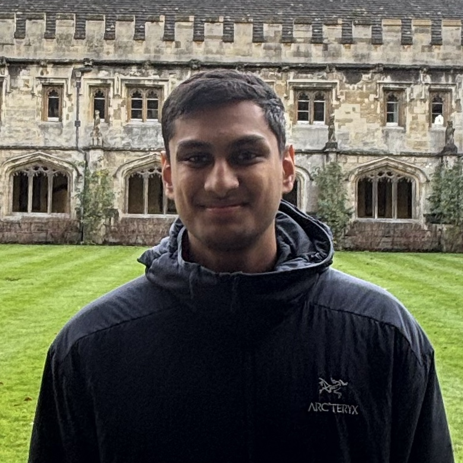

Zero-Shot Coordination among LLM Agents
NeurIPS 2026
ICLR 2026 · MALGAI Workshop · Oral
I am a PhD student at BOLD and the University of Oxford, supervised by Prof. Jakob Foerster and Prof. Shimon Whiteson. My research centers on multi-agent reinforcement learning and cooperative AI. I’m grateful to Sony Interactive Entertainment and the Cooperative AI Fellowship for supporting my PhD.
Previously, I worked as a Research Engineer at Singapore Management University, advised by Prof. Pradeep Varakantham and Prof. Praveen Paruchuri after graduating from IIIT Bangalore.

* denotes equal contribution.
NeurIPS 2026
ICLR 2026 · MALGAI Workshop · Oral
ICLR 2026
ICLR 2025 · Towards Agentic AI for Science Workshop
NeurIPS 2024
ECAI 2024